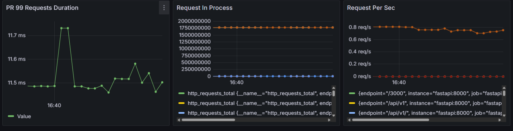
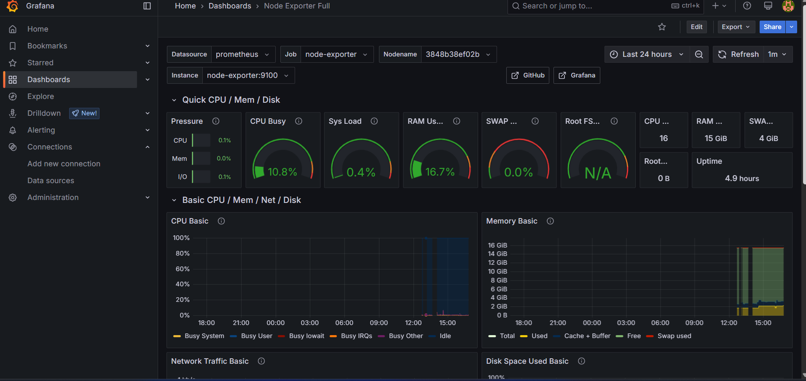
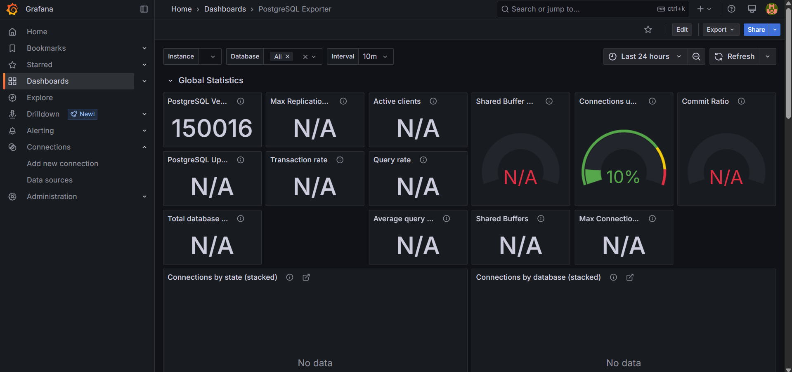
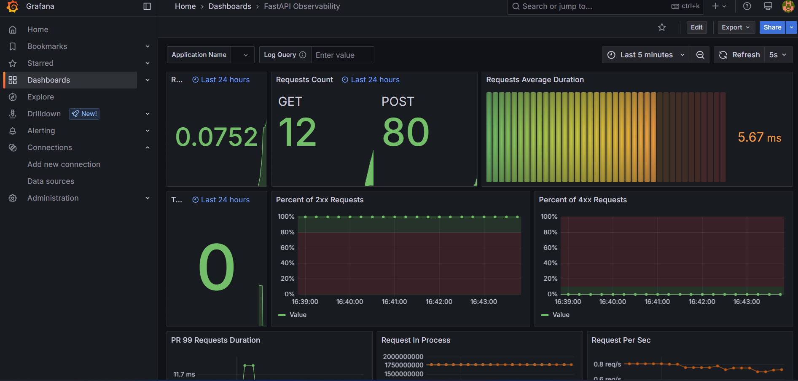

Figure 1: FastAPI Core Metrics Dashboard. Tracks HTTP traffic volume directly with a clean breakdown of request counts (GET vs. POST methods), success rates via a 100% 2xx status code baseline, and low request duration spikes averaging around 5.67 ms.

Figure 2: Real-time API Load Profiling. Provides a fine-grained deep-dive into application request density per second alongside a percentile tracking panel (PR 99 Requests Duration), used to spot network bottlenecks and maintain a stable request-per-second baseline under traffic loads.

Figure 3: Node-Exporter Host System Telemetry. Displays comprehensive machine health metrics scraped by Prometheus, showing historical hardware profiles for infrastructure stability: real-time CPU usage, system core loads, and detailed RAM/Swap memory buffer consumption tracking.

Figure 4: PGVector Database Performance Telemetry. Monitors global transactional database conditions via the Prometheus community exporter, verifying connection pool volumes, client state allocations, query handling rates, and database version status safely.